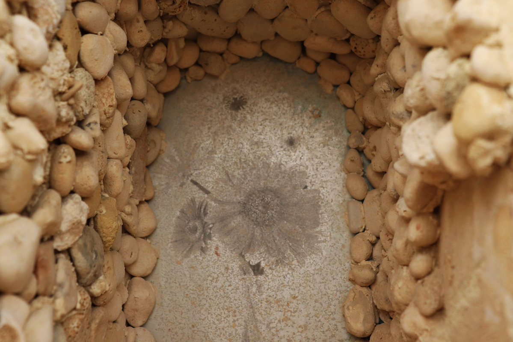
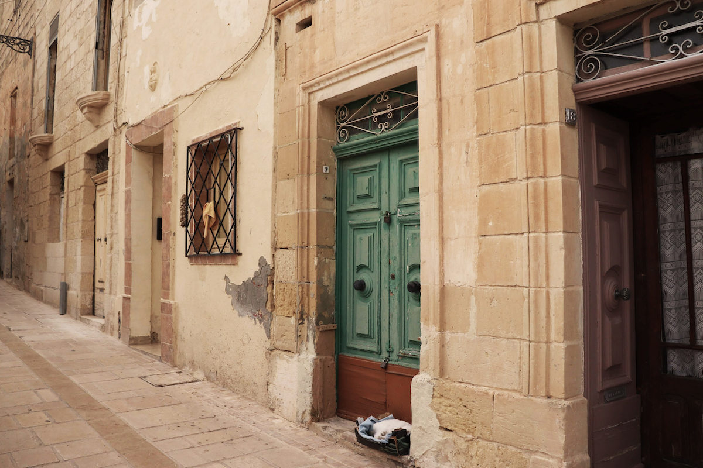

photography
spirit of the place
The intention of this documentation was to visually convey the atmosphere of this place at Vittoriosa. Having an eye for detail, I looked for certain features that differ this street from another. The textures, the colours, and the serenity that there is within, are communicated effectively through these photos.



